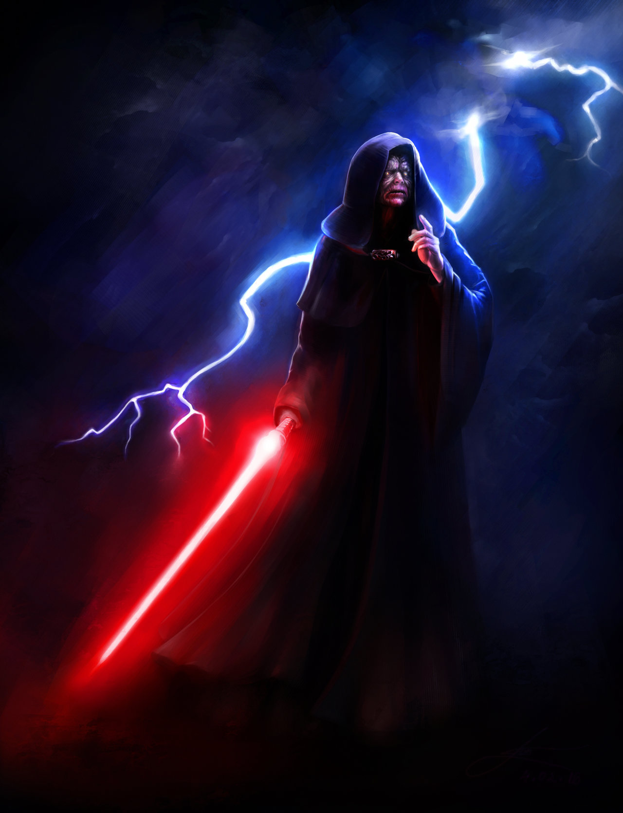
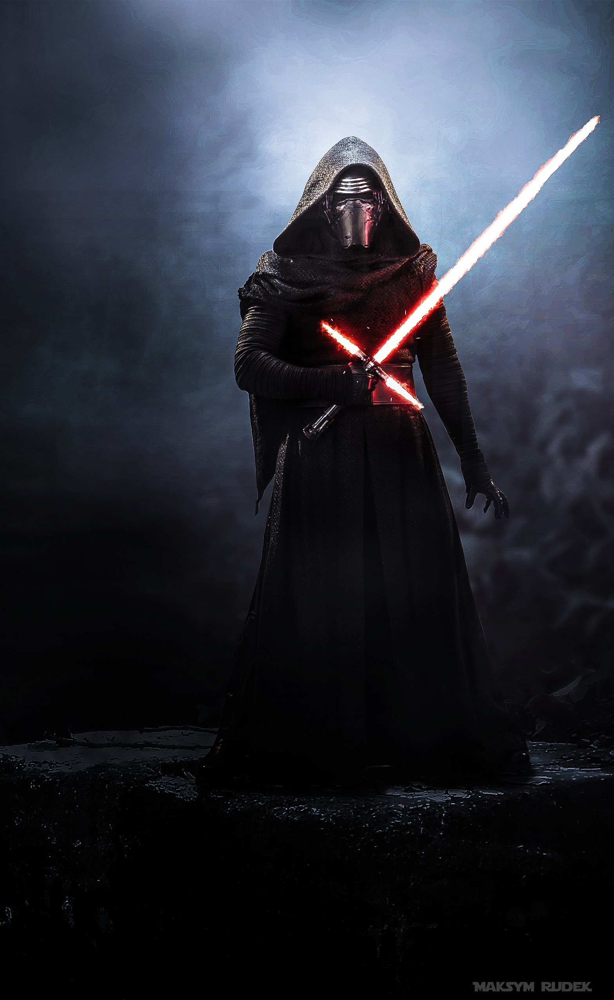
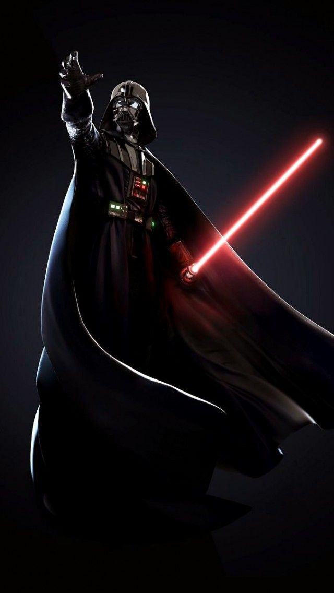
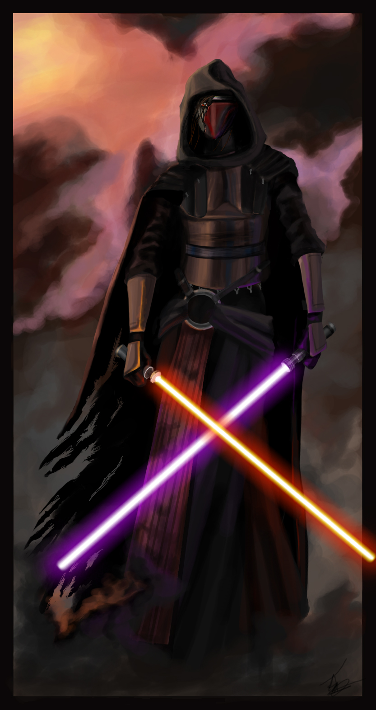

Eso pensé
.La Tragedia de Darth Plagueis el Sabio es una leyenda Sith que Palpatine le relató a Anakin Skywalker, contándole de su maestro, Darth Plagueis. Según la leyenda, Plagueis era tan poderoso y sabio que podía persuadir a los midiclorianos de crear nueva vida, e incluso de salvar a otros de la muerte. Se volvió tan pero tan poderoso que la única cosa que temía era perder su propio poder. Palpatine no mencionó su nombre cuando le contó la historia a Anakin. Fue él mismo quien lo mató mientras dormía
La ira es un sentimiento noble, justo y que busca retribución. La ira nace de la injusticia, de la impotencia y manifiesta la voluntad de un cambio
El deseo es el motor de la acción. Mientras la Fuerza exige sumisión, el Lado Oscuro necesita del deseo y la voluntad para poder emerger.
El poder es el bien más preciado que se pueda obtener. A través de la ira, el deseo y la acción, el poder del lado oscuro es ilimitado e imparable.
La paz es una mentira, solo hay pasión.
Con la pasión, gano fortaleza.
Con la fortaleza, gano poder.
Con el poder, obtengo la victoria.
Mis cadenas se rompen,
la fuerza me liberará.